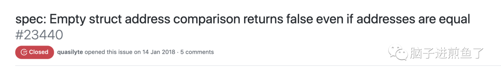

用 Go struct 不能犯的一个低级错误！
原创 陈煎鱼 脑子进煎鱼了;) 3天前
收录于话题
#Go45
#面试题13
大家好，我是煎鱼。
前段时间我分享了 《手撕 Go 面试官：Go 结构体是否可以比较，为什么？》的文章，把基本 Go struct 的比较依据研究了一番。这不，最近有一位读者，遇到了一个关于 struct 的新问题，踩到了雷区。不得解。
大家一起来看看，建议大家在看到代码例子后先思考一下答案，再往下看。
独立思考很重要。
疑惑的例子
其给出的例子一如下：
1 | type People struct {} |
你认为输出结果是什么呢？
输出结果是：false。
再稍加改造一下，例子二如下：
1 | type People struct {} |
输出结果是：true。
他的问题是 “为什么第一个返回 false 第二个返回 true，是什么原因导致的？
煎鱼进一步的精简这个例子，得到最小示例：
1 | func main() { |
输出结果：
1 | // a, b; a == b |
第一段代码的结果是 false，第二段的结果是 true，且可以看到内存地址指向的完全一样，也就是排除了输出后变量内存指向改变导致的原因。
进一步来看，似乎是 fmt.Print 方法导致的，但一个标准库里的输出方法，会导致这种奇怪的问题？
问题剖析
如果之前有被这个 “坑” 过，或有看过源码的同学。可能能够快速的意识到，导致这个输出是逃逸分析所致的结果。
我们对例子进行逃逸分析：
1 | // 源代码结构 |
通过分析可得知变量 a, b 均是分配在栈中，而变量 c, d 分配在堆中。
其关键原因是因为调用了 fmt.Println 方法，该方法内部是涉及到大量的反射相关方法的调用，会造成逃逸行为，也就是分配到堆上。
为什么逃逸后相等
关注第一个细节，就是 “为什么逃逸后，两个空 struct 会是相等的？”。
这里主要与 Go runtime 的一个优化细节有关，如下：
1 | // runtime/malloc.go |
变量 zerobase 是所有 0 字节分配的基础地址。更进一步来讲，就是空（0字节）的在进行了逃逸分析后，往堆分配的都会指向 zerobase 这一个地址。
所以空 struct 在逃逸后本质上指向了 zerobase，其两者比较就是相等的，返回了 true。
为什么没逃逸不相等
关注第二个细节，就是 “为什么没逃逸前，两个空 struct 比较不相等？”。

Go spec从 Go spec 来看，这是 Go 团队刻意而为之的设计，不希望大家依赖这一个来做判断依据。如下：
This is an intentional language choice to give implementations flexibility in how they handle pointers to zero-sized objects. If every pointer to a zero-sized object were required to be different, then each allocation of a zero-sized object would have to allocate at least one byte. If every pointer to a zero-sized object were required to be the same, it would be different to handle taking the address of a zero-sized field within a larger struct.
还说了一句很经典的，细品：
Pointers to distinct zero-size variables may or may not be equal.
另外空 struct 在实际使用中的场景是比较少的，常见的是：
- 设置 context，传递时作为 key 时用到。
- 设置空 struct 业务场景中临时用到。
但业务场景的情况下，也大多数会随着业务发展而不断改变，假设有个远古时代的 Go 代码，依赖了空 struct 的直接判断，岂不是事故上身？
不可直接依赖
因此 Go 团队这番操作，与 Go map 的随机性如出一辙，避免大家对这类逻辑的直接依赖，是值得思考的。
而在没逃逸的场景下，两个空 struct 的比较动作，你以为是真的在比较。实际上已经在代码优化阶段被直接优化掉，转为了 false。
因此，虽然在代码上看上去是 == 在做比较，实际上结果是 a == b 时就直接转为了 false，比都不需要比了。
你说妙不？
没逃逸让他相等
既然我们知道了他是在代码优化阶段被优化的，那么相对的，知道了原理的我们也可以借助在 go 编译运行时的 gcflags 指令，让他不优化。
在运行前面的例子时，执行 -gcflags="-N -l" 指令：
1 | $ go run -gcflags="-N -l" main.go |
你看，两个比较的结果都是 true 了。
总结
在今天这篇文章中，我们针对 Go 语言中的空结构体（struct）的比较场景进行了进一步的补全。经过这两篇文章的洗礼，你会更好的理解 Go 结构体为什么叫既可比较又不可比较了。
而空结构比较的奇妙，主要原因如下：
- 若逃逸到堆上，空结构体则默认分配的是
runtime.zerobase变量，是专门用于分配到堆上的 0 字节基础地址。因此两个空结构体，都是runtime.zerobase，一比较当然就是 true 了。 - 若没有发生逃逸，也就分配到栈上。在 Go 编译器的代码优化阶段，会对其进行优化，直接返回 false。并不是传统意义上的，真的去比较了。
不会有人拿来出面试题，不会吧，为什么 Go 结构体说可比较又不可比较？
最后，感谢欧神的指导和曹大的文章。我是煎鱼，咱们下篇文章见 ：）
参考
- 欧神的微信交流
- 曹大的一个空 struct 的“坑”